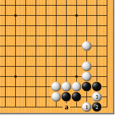
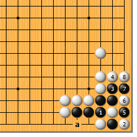
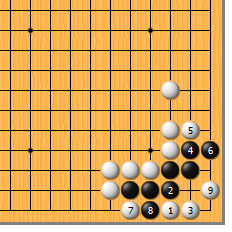
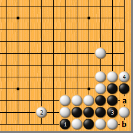
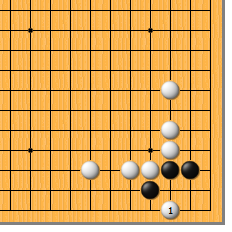
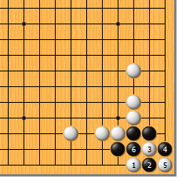
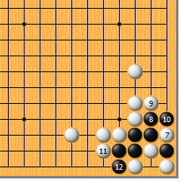

|  |  | |
| 图1 以前研究过了，白1如于a位扳，黑1位虎是净活。所以，正解应该是白1的点，黑2靠，白3挖打成劫。 | 图2 以后的变化还很复杂。黑1应该这么叫吃，白2提时，黑3爬，白4挡时，黑5先扑是好次序！白6提，黑7顺手挡下，白8紧气，黑先提劫。由于a位还松着一气，所以是缓一气劫。
| |
|  |  | |
| 图3 白1时，黑2粘不行。白3一定要长，黑4、6扩大眼位时，白7先扳后再于9位急所尖，黑不行。（白7直接走9位局部来说应该也行）
| 图4 前图之后，黑1提不是先手。白2应，黑3挤时，白4紧气即可，黑无法a位吃胀牯牛。黑如b位提，白打二还一即可。 | |
|  |  | |
图5 研究第97型时，我们没有说过白1的点。结果如何呢？请自己先想一想吧…… | 图6 白1时，黑2同样是靠。不过，黑可没有心情跟你打劫，白3挖时，黑4从这边打（不要搞错了）！白5提时，黑6再打……
| |
|  | 您的高见 | |
图7 白7提时，黑8拐，以下白9、黑10。白无法粘上，白11时，黑12拐下，结果是什么呢？很有趣，此形唤做“循环劫”（也有叫“摇撸劫”的）。黑杀白，不过也给了白无数多的劫材，以后再打劫嘛……（嘿嘿） |